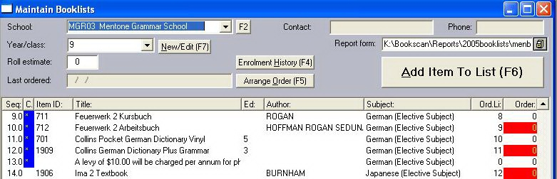

Every item (aside from comments) which goes into a book-list must have a corresponding entry in the master table (i.e.: effectively, it must have an ISBN). You may wish to enter all of these before you start.
You may also wish to enter school details in advance (which can be done by selecting Tables\Authority Tables\Schools from the main menu) but they can be added "on the fly" from the book-list building window. Similarly, you may prefer to enter the Subjects and their Key Learning Areas in advance. The main-menu selection for this is just above the one for Schools.
With the preliminaries out of the way, begin entering a book-list by identifying the school (either from the combo-box or by clicking the button to its right, marked with ellipsis, by which new schools can be added).
Then enter the class' year-number. As you tab off that field, Bookscan will point out that the class does not yet exist (unless it does - in which case you will see the list's items in the bottom, "browser" pane) and will offer to create one. With that done you can start clicking the big, "Add Item To List" button.

The (above-mentioned)Item window can be reopened at any time by double-clicking on the row for the item that you wish to edit excepting that, if you double-click certain columns, there are special results. The columns with their own results are:
Seq: Adjust the item's position in the list.
C: Edit a comment attached to the current line.
Subject: Change the item's subject.
Order: Edit the pending-order quantity.
Most commands that you will need, to assemble the lists, are found on the right mouse-button's pop-up menu. Its two submenu's (one for Items and one for Book-lists) have most of the goodies. Under Items you can delete any line no longer needed. And you can add a line which is just a comment. This sort of comment is not restricted to the "Comments" column, when the book-list is printed. It comes out much as it appears on-screen. Note that comment-lines should be given the same Subject as their adjacent item in order to help with the logical grouping of lines by the reports.
Under Book-lists (on the mouse-menu) you can Delete a whole book-list, Copy one (to a new School/Year), jump to the Ordering window or Re-sequence the current list. Re-sequencing is important once the book-list has been completed and the items sorted into their final order. Never re-sequence a list after you have started taking orders for it!
After entering a draft list, run the Worksheets report. This provides a listing of what you understand the school's requirements to be and features plenty of white space (and prompts) for their further comments. The report can be sorted by Key Learning Area, for convenient distribution to course masters. The reports can be selected by clicking the printer icon on the tool-bar.
The Report Form input (above the "browse" pane) allows advanced users to produce varied output for different schools (or even different years within a school). To do this, you must make a copy of the default report-form (the file named in the edit control), under a different name, and save that new name using the edit-control. Each booklist takes on, as its default, the form assigned to its school. Any form can be changed using the standard reporting tools provided by Barcode Solutions.
Once the work-sheets are returned, and the final changes put in place, re-sequence the list and you are ready to print it, for distribution to students.
Logging the students' requests